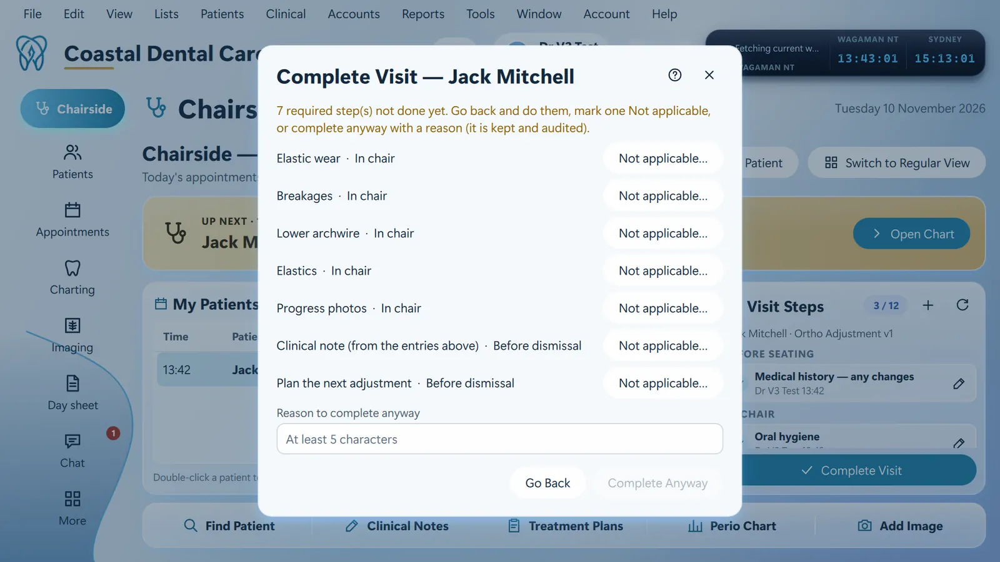
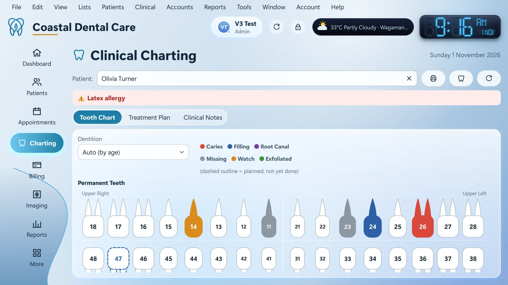
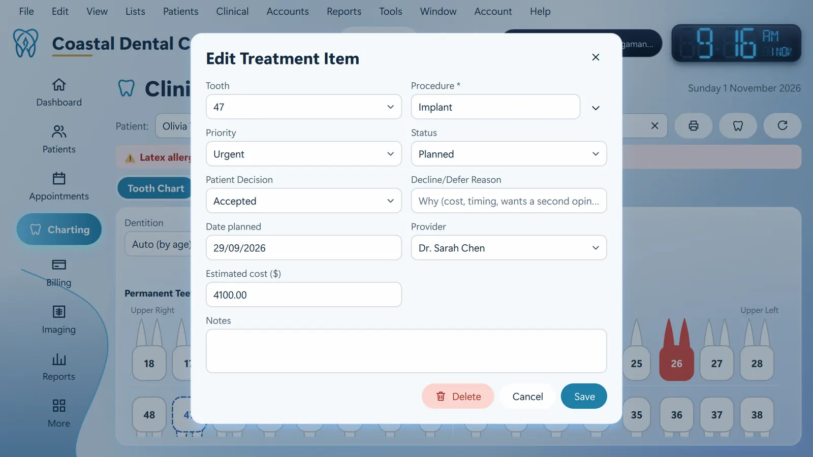
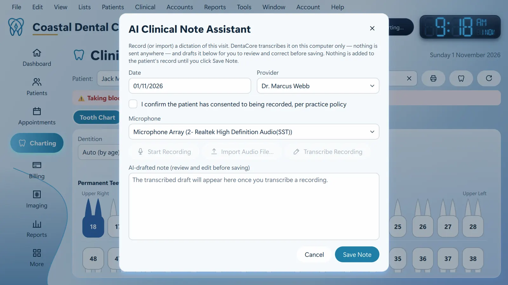
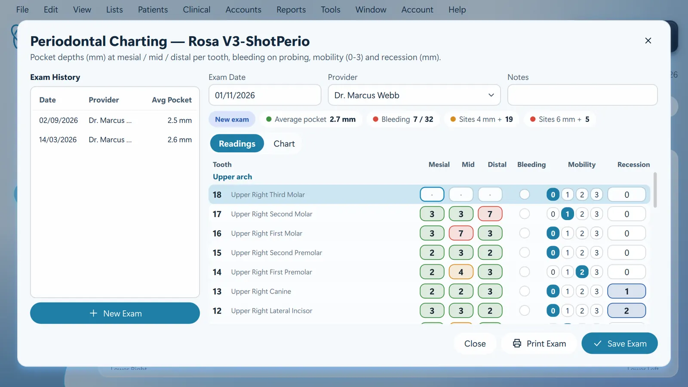
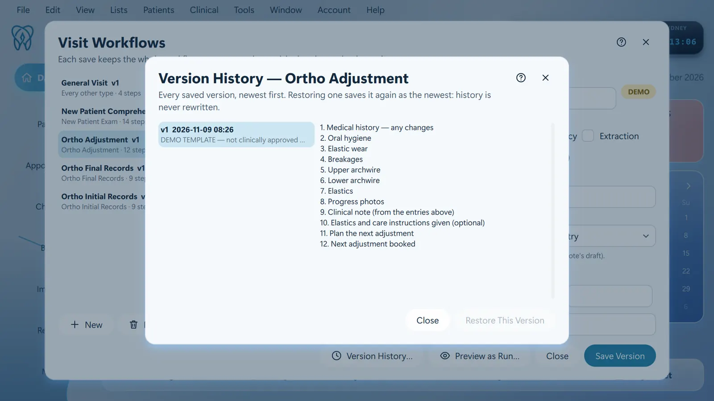

01 / 09 · Clinical charting & notes
Chairside view
Header → Chairside
Each dentist can switch to a Chairside view built around their own day.
- Up next: the patient about to be seated.
- My Patients Today, with each patient's status and chair-flow stage.
- Find Patient, and one click into the chart, images and notes.
- The visit's steps on a rail beside the list when Visit Workflow is on.
- Switch back to the regular view at any time.

02 / 09 · Clinical charting & notes
The tooth chart
Clinical Charting → Tooth Chart
The chart shows every tooth from the dentist's side, coloured by its most important finding, with planned work drawn dashed.
- Findings by tooth and surface: caries, fillings, root canals, missing, watch and more, each with its date, provider and notes.
- Click a tooth to see every finding ever recorded on it, newest first.
- Medical alerts and allergies sit in a red banner right above the chart.
- Permanent, mixed and primary dentitions, worked out from the patient's age or chosen by hand. Primary teeth are always labelled as primary.
- A gentle nudge when a primary tooth reaches its usual shedding age with nothing recorded.
- Print Chart makes a PDF for the file or a referral.

03 / 09 · Clinical charting & notes
Treatment plans
Clinical Charting → Treatment Plan
The treatment plan is the running list of what needs doing, and the bridge between the chair and the front desk.
- Add items by tooth with the procedure, priority, fee catalog item and status.
- Record the patient's decision (accepted, declined, deferred) and the reason.
- Reception pulls planned items straight into an invoice, so the bill always matches what was planned.
- Print or email the plan to the patient as a tidy PDF.
- Print a lab label pre-filled from the selected item.
- Send to Lab, Refer to Specialist and Track Implant start a case from the plan item.

04 / 09 · Clinical charting & notes
Case acceptance follow-up
More → Case Acceptance
One practice-wide list of every plan item that needs another conversation, so “who do we call back about that crown?” doesn't rely on memory.
- Items the patient declined or deferred.
- Items left as Presented past the number of days you choose.
- Double-click to open the patient's treatment plan.
- Nothing is sent automatically. Staff decide how to follow up and record what happens.
- The trend in acceptance rate shows in the owner's analytics.

05 / 09 · Clinical charting & notes
Guardian letters in plain English
Charting → Guardian Letter
When a child needs treatment, the parent gets a clear explanation, not a clinical note.
- Tick the plan items to include. Each is explained from the practice's own plain-English phrasebook, so “pulpotomy” becomes a sentence a parent understands.
- Add anything specific this family needs to know, with payment and appointment wording.
- Optionally translate it into the family's language, always with a note to check anything unclear. If translation isn't available it prints in English rather than pretending.
- Preview, print, save as PDF or email to the guardian. Every letter is logged.

06 / 09 · Clinical charting & notes
Clinical notes and the on-PC scribe
Clinical Charting → Clinical Notes
A dated log of everything worth recording that doesn't fit the chart. Notes can't be edited after saving, so the record stays trustworthy.
- Type a note, or use the Scribe: record the conversation or import an audio file and get a draft note to review and edit.
- Speech is turned into text on the practice's own computer. No audio or transcript is sent anywhere.
- The patient's consent is confirmed before recording can start.
- A note made this way is labelled Scribe, so it's always clear how it was produced.
- Choose the speech model size in Settings to trade speed against accuracy.

07 / 09 · Clinical charting & notes
Periodontal charting
Clinical → Perio Charting
A full-mouth perio exam with six sites per tooth, typed straight through.
- Pocket depth at mesial, mid and distal on each side, bleeding on probing, mobility 0 to 3 and recession.
- A summary of the average pocket depth, bleeding and sites of 4 mm and 6 mm or more.
- Both arches drawn as a chart in fixed perio colours.
- Exam history with the date, provider and average pocket depth of each exam.
- Save Exam keeps the window open for the next patient. Print makes a PDF.

08 / 09 · Clinical charting & notes
Visit steps that tick themselves
Settings → Features → Visit Workflow
Each appointment type can have its own checklist, shown on a rail beside Chairside: before seating, in the chair, before dismissal and at the front desk.
- Steps tick themselves when the record is made during the visit: a clinical note, charting, a perio exam, images, a plan item, the next visit planned.
- The medical history counts if today's intake form came in. A consent counts while it's still valid.
- Quick-entry steps such as oral hygiene, archwires or elastics drop their answers into the note's draft.
- Complete Visit is never blocked. It lists what's outstanding, and finishing anyway needs one reason, kept in the audit log.
- Workflows are versioned with full history and Restore, and Preview as Run shows how the steps start for a patient today.

09 / 09 · Clinical charting & notes
Clinical day sheet and prep protocols
More → Clinical Day Sheet
Two printable documents for the day ahead, and a written protocol for setting up each procedure.
- The clinical staff day sheet for today or tomorrow.
- Each dentist's daily brief, printed one at a time or all together.
- Prep protocols per procedure: room prep lead time, the checklist of instruments and materials with quantities, and autoclave settings.
- Every change to a protocol is a new version with a change note, and an old version can be restored.
